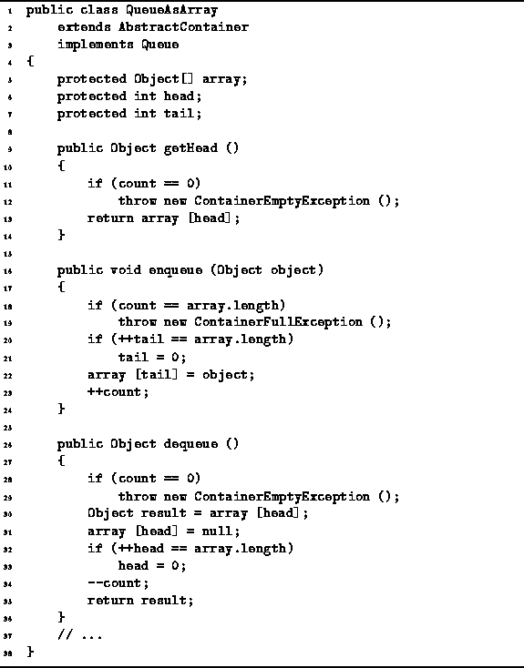

Data Structures and Algorithms
with Object-Oriented Design Patterns in Java
Data Structures and Algorithms
with Object-Oriented Design Patterns in Java
Program  defines the getHead,
enqueue, and dequeue methods
of the QueueAsArray class.
defines the getHead,
enqueue, and dequeue methods
of the QueueAsArray class.

Program: QueueAsArray class getHead, enqueue, and dequeue methods.
The getHead method simply returns the object found at the head of the queue, having first checked to see that the queue is not empty. If the queue is empty, it throws a ContainerEmptyException exception. Under normal circumstances, we expect that the queue will not be empty. Therefore, the normal running time of this method is O(1).
The enqueue method takes a single argument which is a the object to be added to the tail of the queue. The enqueue method first checks that the queue is not full--a ContainerFullException exception is thrown when the queue is full. Next, the position at which to insert the new element is determined by increasing the tail field by one modulo the length of the array. Finally, the object to be enqueued is put into the array at the correct position and the count is adjusted accordingly. Under normal circumstances (i.e., when the exception is not thrown), the running time of enqueue is O(1).
The dequeue method removes an object from the head of the queue and returns that object. First, it checks that the queue is not empty and throws an exception when it is. If the queue is not empty, the method first sets aside the object at the head in the local variable result; it increases the head field by one modulo the length of the array; adjusts the count accordingly; and returns result. All this can be done in a constant amount of time so the running time of dequeue is a O(1).
 Copyright © 1998 by Bruno R. Preiss, P.Eng. All rights reserved.
Copyright © 1998 by Bruno R. Preiss, P.Eng. All rights reserved.